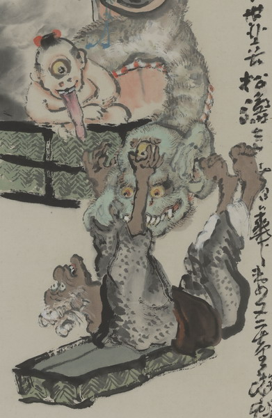

葛籠から飛び出した首の長い化物。肌は緑色で、頭は禿げている。目玉が大きく、大きな前歯をむき出しにしている。首が蛇腹のようになっており、胴体より下は見えない。葛籠の蓋の上にひっくり返った老婆を脅している。
出典：親書誌：U426_nichibunken_0149：〔舌切雀之図；シタキリスズメノズ〕／日付：2010／資源識別子：U426_nichibunken_0149_0001_0000
Copyright (c)2010- International Research Center for Japanese Studies, Kyoto, Japan. All rights reserved.